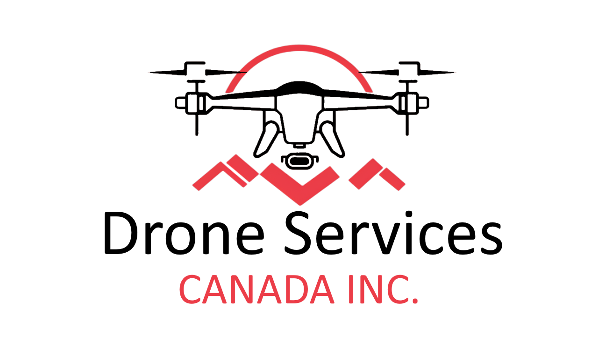

Large-area topo
Efficient aerial collection and processing for substantial sites and terrain-driven decisions.
Drone-based LiDAR scanning for engineering, construction, development, and environmental teams that need accurate terrain data from large or difficult sites.
Drone Services Canada Inc. is based in Southern Ontario and works on professional drone data projects across Canada. LiDAR is a core service, especially for large-area topo and bare-earth terrain work.
Project conversations usually start with a location, a rough boundary, vegetation conditions, and the deliverables needed at the end: point cloud, bare-earth model, contours, CAD surface, imagery, volumes, or reporting.

The focus is professional LiDAR scanning, not hobby drone work, small residential lots, or one-off media requests. The best fit is a project that needs measurable terrain data and usable deliverables.
Efficient aerial collection and processing for substantial sites and terrain-driven decisions.
LiDAR classification workflows for sites where vegetation hides the ground.
Point clouds, surfaces, contours, CAD-ready data, imagery, volumes, and reporting.
For LiDAR quotes, send the boundary, location, vegetation conditions, and target deliverables through the main DSCI contact page.